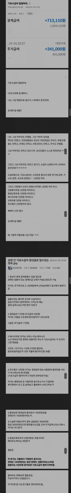

사실 꿀빠는게 아니라
죽지말라고 주는거임

사실 꿀빠는게 아니라
죽지말라고 주는거임
세금으로 저렇게 보살피는게 나라의 관점에서 더 이득인건가?
득실 관점에서는 모르겠고, 최소한의 인권을 지켜준다는 의의에서는 좋은게 아닐까 싶다.
도의적으로는 좋은데 나라에서 저런 제도를 만들 때
그냥 불쌍하니까 도와줍시다! 하고 만들진 않았을 것 같고 어떠한 연유에서 저런 제도가 생겼을까 궁금했어
국가 단위에서 도의적, 사상적 만족감을 무시할만한 것도 아니지.
십자군 전쟁만 봐도 정치적+경제적 득실도 있었겠지만, 진심으로 하느님을 위해, 신앙을 위해 성지를 탈환해야 한다는 도덕적 의무감도 있었겠지.
좋은 말로 인권 챙겨주는 거지 돈 없어서 강력범죄 안 저지르게 하는 게 큼
+ 감옥가면 수감됏다고 시스템에 떠서 바로 수급중지임
왜? 인간대청소라도 한번 해주게?
최소한의 인권보장 + 범죄 저지르지 말라고 주는 거임.
저건 순수하게 복지라서 만약 단기적 이득을 따지면 다 내쳐내야함
빈민국은 실제로 돈이 없고 나라가 부패하여 그나마 있는 재정도 잘사는 사람들에게만 감
거지들은 전부 내쳐냄 그래서 잘사는 사람들이 버린 찌꺼기 음쓰에서 그나마 쓸만해보이는거 재탕해서 먹고삼
기본적으로 국가가 부강해질수록 노동자 권리, 인권, 복지도 같이 상승하게 되는데
우리 세금이 저런곳에 쓰이는것에 대해서 부정적으로 볼 것은 없는게 사람마다 각자 사정은 다르지만 적당히 살다가도 인생이 나락가는 시점이 존재할수도 있고 어느날 갑자기 장애인이 될수도있는거고 최악인 상태에 몰린 인간을 그냥 길가에 버리고 뒤지게 냅두는 것보다는 인도적이고 그들에게 일말의 기회를 줌으로서 살아가게 하는게 맞지 않나 싶음
어짜피 저돈이 결국 필수재나 소비재로 다시 빨려들어옴 경제 돌아가는데에도 어느정도 기여함 소비가 일어나게 하니까
국가적 이득은 1000명중 100명이라도 다시 사회로 돌아온다면 또 그들이 낳은 후손이 다시 사회 기반에 기여한다면 충분히 미래에 투자한다 생각하는거임
도의적으로는 좋은데 나라에서 저런 제도를 만들 때
그냥 불쌍하니까 도와줍시다! 하고 만들진 않았을 것 같고 어떠한 연유에서 저런 제도가 생겼을까 궁금했어
보통은 치안문제로 늘어나는 사회적비용이 복지비용이랑 별차이 안나는경우가 많아
어차피 감옥보내면 쓸비용이기도하고 거기가면 교도관도 뽑아야되고 감옥가기전에 추가피해도 나오고
도덕군자도 한달굶으면 장발장됨
꽤 단기적으로 봐도 최저한도의 복지는 이득임
고층 쇼핑몰에 낙사방지 그물망 같은거지
경제 재정상태도 사고날수 있는거고 그대로 죽지말고 모든사람 다 건저낼수 없더래도 지금할 수있는만큼 구해내는 역활
저러다 중추로 복귀할 수도 있는거고 그물망 없어서 누구 머리위로 떨어져서 엄한사람 같이 죽는것도 막아주고
나라 역량따라 나일론 끈이냐 동아줄이냐 강선이냐 그물망 넓이랑 튼튼함이 달라지는거고
사회적관점에서 저정도되도 버려지지않는구나 라는 보장같은거지 국가에대한 국민의 신뢰는 올라갈듯 ㅋㅋ
선은 이득임
어떤 상황이라 하더라도
너도 이해하기 쉽게 진짜 간단하게 설명해줄게
저런 애들이 돈이 다 떨어지고 일도 못하게 될 때
'아... 나는 이 세상에서 도태되었구나 나는 실패했으니 아무 피해 안 가게 조용히 죽을게'
이게 가능할까
아니면
'이 시1발 세상이 나한테 해준게 뭐야!(칼을 들고 나가며)'
이게 될 까?
과세가지고 지랄하는 졸부들이 있는데 그 세금이 싸게먹히는거라는걸 알아야됨. 막말로 세금 아예 안내는곳이라면 그정도 벌이면 목숨걸고 살거나 무장용병 사야되겠지. 그것마저도 믿을 수 있을까 싶긴해
그래도 살아라 라고하는 돈이구나
우리나라 복지 수급이 얼마나 깐깐한데
사실 진짜 암적인 존재들은 저렇게 대놓고 얘기 안함
사지정신 멀쩡한 놈들이 몰래 편법으로 빼먹고 있지
이걸 부러워 하는 애들이 있으면 놀이터가서 땅이라도 파셈
힘내라
내친구의 친구도 뇌졸증 와서 반신이 불편함. 그래서 저정도 나옴.
사지멀쪙한 2-60대 성인이 일안하고
방구석애서 배 긁고 있다고 돈쥬는건 없음.